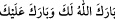

<a name=6105></a><br/>
<br/>
<i>ed-Dürrü’l-mensûr</i>, VI, 395-396.<br/>Nitekim Peygamberimiz bu sözü şu şekilde değiştirmiştir. <br/>Beyhakî, es-Sünenü’l-kübrâ, VII, 464.<br/>Sehâvî, Mekâsıd, s. 227.<br/>
